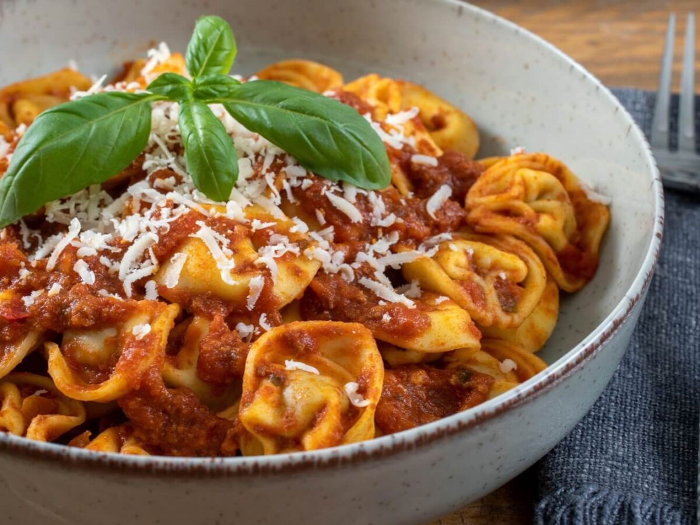

Mis cosas favoritas
Comidas favoritas
- Tortellinni
- Pure de patatas
- Pollo
- Conchas finas
Pincha aquí para saber la receta de los Tortellini

Jugadores de fútbol favoritos
Cristiano Ronaldo
Lamine Yamal
Kylian Mbappe
Pincha aquí para saber la vida de Cristiano Ronaldo
Me gustan esas comidas porque estan ricas
y los futbolístas me gustan por su estílo de juego